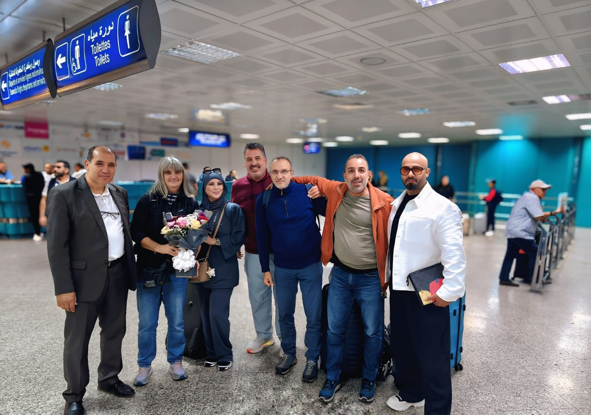

Retrouvez ici les photos, les vidéos et les articles de presse de la journée du Mardi 27 octobre 2026 : Cérémonie d'ouverture, séance plénière inaugurale, sessions parallèles par axes et atelier 1.
Photos

Vidéos
Les vidéos de cette journée seront publiées ici.
Articles de presse
- Les articles de presse de cette journée seront publiés ici.